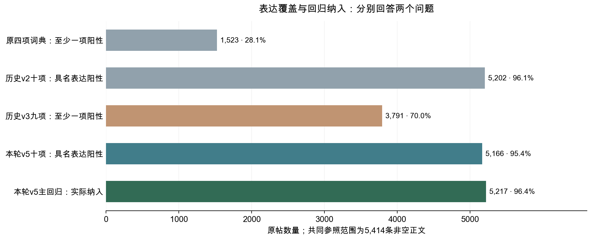
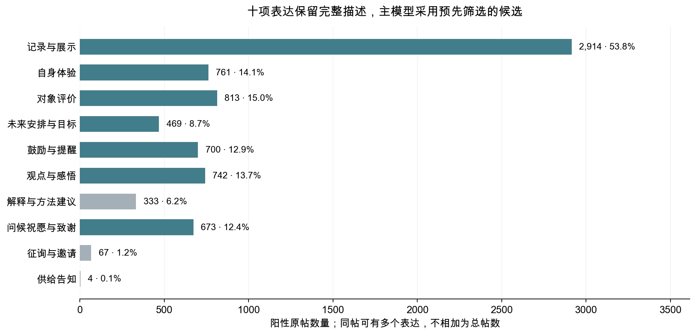
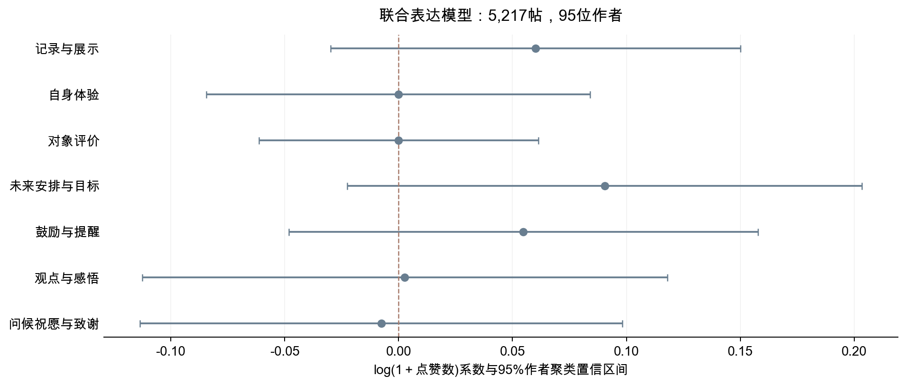

Keep社区正文多维测量：全量重读与点赞关联
v5全量实证版 · 可编辑报告 · 2026年11月5日
本轮已按同一冻结手册重新阅读全部4,156种不同正文，回填到5,414条非空原帖；原四项词典退出新主模型。十项表达识别出至少一项明确表达的有5,166帖（95.4%），其中1,650帖同时有至少两项表达（30.5%）。表达主模型实际纳入5,217帖（非空正文的96.4%、全部9,532帖的54.7%），这个数包括可明确判断为阴性的帖子。
控制作者、日期、正文形式及其他表达后，七项表达均未呈现明确的点赞关联；三种稳健性检查也未改变这一判断。 本轮恢复了四项词典与v3未能覆盖的许多表达，数据没有支持某一种表达能稳定获得更多点赞的说法。覆盖高低不等于分类正确：新增80条盲读的完整表达集合一致率为73.8%，鼓励、体验评价及方法建议仍有边界分歧。当前测量来自AI阅读，独立人工语义复核为0。
1. 数据范围与正文利用率
全部样本有9,532帖。其中3,984帖没有可观察的原始正文，134帖在清理后为空，剩余5,414帖正文非空。前两部分保留在元数据描述中，不能凭空补出语义；因此任何正文方案都应先以5,414帖作为语义分析的参照范围。非空正文占全样本56.8%，不是新分类只利用了这么多可读数据。
本轮对4,156种不同正文统一重读，再按原帖映射恢复重复文本，回归单位仍是帖子。去重节省的是相同文字的重复编码，没有删除相同正文对应的不同帖子。不同正文中具名表达阳性为3,995/4,156（96.1%）；帖子层面的比例受重复次数影响，下面统一用原帖作分母。
| 口径 | 原帖数 | 占5,414帖 | 回答的问题 |
|---|---|---|---|
| 至少一项具名表达 | 5166 | 95.4% | 表达类别的阳性范围 |
| 至少两项具名表达 | 1650 | 30.5% | 保留同帖的多种明确表达 |
| 十项表达全部可判 | 5216 | 96.3% | 各项明确阳性或阴性 |
| 十项表达全为明确阴性 | 57 | 1.1% | 可比较的无阳性，不等于整帖没有信息 |
| 无具名表达阳性且含未知 | 191 | 3.5% | 不能把未知填成阴性 |
| 至少一项具名内容对象 | 3685 | 68.1% | 运动、身体、饮食、生活或工具 |
| 内容或表达至少一项阳性 | 5186 | 95.8% | 两个轴的并集，其他类不计入 |
| 本轮表达主模型实际纳入 | 5217 | 96.4% | 仅要求该模型变量和控制项可用 |
具名表达没有阳性的共有248帖，要区分“十项都明确没有”与“没有阳性但仍有未知”。纯符号、语义无法识别的片段可以保留未知；不能为了接近100%就塞进展示或积极表达。其他明确表达另记，不计入具名覆盖。正文形式、长度、表情等信息仍可用于各自适合的描述。

| 历史口径 | 原阳性帖 | 原阳性比例 | v5阳性而原无 | 原阳性而v5无 | v5阳性净变化 |
|---|---|---|---|---|---|
| 原四项词典 | 1523 | 28.1% | 3661 | 18 | 3643 |
| 历史v2十项表达 | 5202 | 96.1% | 34 | 70 | -36 |
| 历史v3九项表达 | 3791 | 70.0% | 1380 | 5 | 1375 |
这些是定义与实际编码同时变化后的标签转移，不能直接称为纠正了多少错误。v2原本就覆盖题注、观点和建议，不能因为v5比v3覆盖广就声称超越全部旧方案。新方案的价值还包括把内容对象、表达行为与条件细节分开，并明确保留阴性和未知。
具体到本轮，v5比v3净增加1,375帖、约25.4个百分点；比v2少36帖、约0.7个百分点。v2阳性而v5无具名阳性的70帖中，15帖在v5十项全未知，37帖十项明确阴性，18帖已知与未知并存。这个差别说明测量边界仍会改变，不能把覆盖略降直接等同于利用数据更差，也不能只归因为纯表情被排除。
2. 变量设计与正文表达分布
研究要比较正文怎样表达与互动反馈的关系。一个帖子可以记录训练、写出疲惫、再鼓励继续；强制分到唯一主类会丢掉实际信息。因此本轮使用可重叠指标：内容轴回答谈什么，表达轴回答正文在完成什么交流行为，条件属性记录相应表达中的细节。它们是研究问题下的操作化测量，不是穷尽所有表达风格的天然分类。
四项词典的原意被重新拆解：自律或目标词分到安排目标、鼓励及事件断言等不同信息；称呼不直接推断互助；积极词改为体验/评价语境中的正负方向；问号保留为形式信息，明确征询或邀请才进入请求表达。新定义有实际变化，所以点赞模型必须重估，旧系数不能改名继承。
| 表达行为 | 阳性帖 | 占非空正文 | 未知帖 | 阳性作者数 | 作者内有变化数 | 本轮位置 |
|---|---|---|---|---|---|---|
| 记录与展示 | 2914 | 53.8% | 179 | 90 | 79 | 主模型 |
| 自身体验 | 761 | 14.1% | 179 | 72 | 70 | 主模型 |
| 对象评价 | 813 | 15.0% | 177 | 77 | 77 | 主模型 |
| 未来安排与目标 | 469 | 8.7% | 178 | 65 | 64 | 主模型 |
| 鼓励与提醒 | 700 | 12.9% | 171 | 79 | 78 | 主模型 |
| 观点与感悟 | 742 | 13.7% | 171 | 55 | 54 | 主模型 |
| 解释与方法建议 | 333 | 6.2% | 170 | 44 | 44 | 保留描述 |
| 问候祝愿与致谢 | 673 | 12.4% | 170 | 57 | 57 | 主模型 |
| 征询与邀请 | 67 | 1.2% | 172 | 27 | 27 | 保留描述 |
| 供给告知 | 4 | 0.1% | 170 | 2 | 2 | 保留描述 |
七项主候选来自此前冻结规则下的200条随机双编码筛查；本轮再按阳性、阴性各至少40帖、至少10位作者有作者内变化检验支持，并在联合样本复查。解释建议、征询邀请、供给告知仍完整描述：此前试点阳性太少，不因全量出现更多就追认其已通过一致性验证，也不按点赞显著性临时替换主变量。

| 内容对象 | 阳性帖 | 占非空正文 | 未知帖 |
|---|---|---|---|
| 运动训练 | 1569 | 29.0% | 318 |
| 身体健康 | 1295 | 23.9% | 314 |
| 饮食营养 | 645 | 11.9% | 310 |
| 具体生活 | 1401 | 25.9% | 305 |
| 工具服务 | 686 | 12.7% | 327 |
内容对象与表达的阳性并集比单独表达增加20帖。这是内容轴带来的实际增量；两个轴仍分别保存，不能要求内容明确才允许表达入模。具体纳入与排除边界见冻结编码手册。
记录与展示覆盖2,914帖（53.8%），是最常见的表达；评价、体验、观点、鼓励和问候各有数百帖。征询邀请有67帖，供给告知只有4帖，后者不足以支撑稳定的单独回归。内容轴只比表达轴多覆盖20帖，其主要用途是区分讨论对象，而不是大幅增加正文覆盖。
3. AI辅助编码与一致性检查
本轮由大模型按84批实际阅读全文，对每个标签逐项判断，并为每项阳性保留精确原文证据；模型只看匿名正文与冻结手册，不看点赞、旧标签或原帖身份。完成的批次在中断后保留，其余由新上下文续读。全部260条试点正文也重新编码，没有把旧试点答案作为生产答案导入。代码用于核对字段、证据子串、父子逻辑、批次与映射，不用关键词规则替代这次语义阅读。
全量归并核对了全部4,156条的阳性证据与条件属性逻辑，回填数与9,532帖状态一致。编码者主动报告的问题按冻结手册再读，共记录7处个别编码或证据纠错，含2处边界个案的AI复查，保留改前内容、原因与哈希；这些修正均在查看全量分布及本轮点赞结果前完成。结构通过只能说明格式和证据可追溯，不能证明证据足以支持语义标签，个案AI复查也不等于独立人工效度验证。
原200条随机诊断和60条困难诊断保留为固定对照。本轮生产编码与原A、B分别比较，不能把三份同基座AI结果称为人类投票真值。
| 固定对照组 | 不同正文数 | 本轮具名表达阳性 | 与原A全表达三状态集合相同 | 与原B全表达三状态集合相同 |
|---|---|---|---|---|
| 原200条随机诊断 | 200 | 194 | 154/200 | 148/200 |
| 原60条困难诊断 | 60 | 55 | 48/60 | 44/60 |
又从排除已有记录的开发与复核材料后剩余的2,833种正文中随机抽80条，交给新的独立上下文盲读。抽样在生产已完成15批时冻结，发生于查看生产标签分布和本轮点赞结果之前，属于补充检查，不冒充最初试点的一部分，也不是从未接触过的新语料。
80条中，两次编码的完整表达阳性及未知集合相同59条（73.8%）；至少同意一项相同具名表达的有76条。逐项结果如下。
| 表达 | 共同阳性 | 双方可比阳性并集 | 阳性一致 | 任一未知 | 三状态相同 |
|---|---|---|---|---|---|
| 记录与展示 | 41 | 46 | 94.3% | 0 | 75/80 |
| 自身体验 | 10 | 15 | 80.0% | 0 | 75/80 |
| 对象评价 | 15 | 22 | 81.1% | 0 | 73/80 |
| 未来安排与目标 | 6 | 8 | 85.7% | 0 | 78/80 |
| 鼓励与提醒 | 6 | 10 | 75.0% | 0 | 76/80 |
| 观点与感悟 | 15 | 17 | 93.8% | 0 | 78/80 |
| 解释与方法建议 | 1 | 4 | 40.0% | 0 | 77/80 |
| 问候祝愿与致谢 | 10 | 10 | 100.0% | 0 | 80/80 |
| 征询与邀请 | 1 | 1 | 100.0% | 0 | 80/80 |
| 供给告知 | 0 | 0 | 无可比阳性 | 0 | 80/80 |
阳性一致按2×共同阳性÷（2×共同阳性＋两方向单方阳性）计算，只在双方都可判的比较中使用，不能称为准确率。支持很少的项不因一致率高就获得可靠保证；支持较多仍有分歧的项，解释时应降低信心。补充检查不改变已经冻结的本轮模型名单，也不把分歧答案看过后回填成更好看的覆盖率。
这次盲读的结论是“主要范围能复现，部分边界仍不稳”。展示阳性一致94.3%，观点感悟93.8%；体验80.0%、评价81.1%，鼓励75.0%且有4条只有生产编码标为阳性。方法建议仅在4条可比阳性并集中有1条共同阳性，阳性一致40.0%，支持虽少，仍提示不能把它视为已稳定的测量。问候的100%来自10条可比阳性，请求的100%只来自1条，不能据此宣布后者完全可靠。这些结果限制了“分类合理性已经得到充分核实”的说法，后续应优先核对上述边界及罕见类。
正负方向还取决于父集合是否识别一致：80条中双方都认为有体验或评价的为25条，父集合状态不同6条；双方父集合为阳性且两个方向均明确的24条中，正负组合相同24条。同基座模型可能共享误判，本轮独立人工语义复核为0。因此这些是可复查的AI辅助测量，不能宣称四类或十类已经得到人工效度认证。
4. 正文表达与点赞数的关联
主模型在5,217帖、95位作者上联合放入7项表达。比较某项表达出现与未出现时，同时考虑其他已测表达、正文长度对数、tag、表情数、课程引用、内容形式、帖子类型、时段以及作者与日期固定效应。原四项词典没有进入新控制项；未知不填0，未要求所有条件属性齐全才入模。
因变量为log(1＋点赞数)，标准误按作者聚类，并使用有限样本修正和作者簇数减1的t自由度。下表区间为逐项95%聚类区间，BH q只在本模型的表达检验组内校正；区间并未做同时推断校正。这些区间以本轮AI标签为给定输入，未计入语义编码误差或标签不确定性。系数不是点赞率，也不直接表示平均点赞数变化百分比。
| 表达 | β | 95%作者聚类区间 | p | 表达组内BH q |
|---|---|---|---|---|
| 记录与展示 | 0.060 | [-0.030, 0.150] | 0.188 | 0.658 |
| 自身体验 | -0.000 | [-0.084, 0.084] | 0.998 | 1.000 |
| 对象评价 | 0.000 | [-0.061, 0.061] | 1.000 | 1.000 |
| 未来安排与目标 | 0.090 | [-0.022, 0.203] | 0.115 | 0.658 |
| 鼓励与提醒 | 0.055 | [-0.048, 0.158] | 0.293 | 0.683 |
| 观点与感悟 | 0.003 | [-0.112, 0.118] | 0.962 | 1.000 |
| 问候祝愿与致谢 | -0.008 | [-0.113, 0.098] | 0.886 | 1.000 |

七项表达的区间均包含0，最小组内q为0.658。例如未来安排与目标的估计值为0.090，区间为[-0.022, 0.203]：方向偏正，但现有数据仍允许没有差异或一定负向差异，不能写成目标表达能带来更多点赞。自身体验、对象评价和观点感悟的点估计接近0，也不能据此证明所有可能的实际关系都为零。
逐项最大可用样本为5,235—5,244帖，同主样本逐项模型为5,217帖；两组逐项结果也均未达到表达组内q＜0.05。因此“联合放入后彼此抵消”不是当前数据已支持的解释。发布后的曝光、粉丝规模变化、采集时的累计时间和图片视频内容没有被完整控制，任何条件关联都不能改写成采用这种表达就会获得更多或更少点赞。
5. 内容对象与显性正负方向的补充分析
内容补充模型使用5,030帖，比主模型少187帖。下表先在这同一批帖子上重新估计表达模型，再加入具名内容对象，避免把换样本造成的变化算成内容解释。加入内容后，表达检验组内q＜0.05的有：无。
| 表达 | 同样本未加内容β | 同样本加入内容β | 加入内容后q |
|---|---|---|---|
| 记录与展示 | 0.058 | 0.070 | 0.402 |
| 自身体验 | 0.006 | -0.009 | 0.984 |
| 对象评价 | -0.001 | 0.001 | 0.984 |
| 未来安排与目标 | 0.107 | 0.112 | 0.402 |
| 鼓励与提醒 | 0.055 | 0.052 | 0.699 |
| 观点与感悟 | 0.012 | 0.008 | 0.984 |
| 问候祝愿与致谢 | -0.005 | -0.009 | 0.984 |
这里加入的是本轮按冻结规则、由AI读取的可重叠内容对象指标，含义与旧NMF成分不同。内容指标允许多项为1，不是和为1的组成权重；不能套用NMF省略参照主题的解释。表达与内容的q分别在各自检验组内校正，内容补充模型仍属于探索性检查。
加入五项内容对象后，表达仍没有达到组内q＜0.05；五项内容对象本身也没有达到各自检验组内q＜0.05。当前结果没有显示“先控制内容，就会出现明确的表达关联”。
正负方向只在自身体验或对象评价明确时判定。负向包括疲惫、疼痛等身体不适，因此不能简单称为负面心理情绪。两项都没有只表示没有显性正负方向，不表示作者心理中性；无相应父表达记为不适用，不能当成“没有负向”。
共有1,396帖有明确体验或评价，其中两个方向都可判的有1,377帖。
| 条件组合 | 原帖数 | 本轮使用 |
|---|---|---|
| 仅显性正向 | 686 | 纳入条件比较 |
| 仅显性负向 | 490 | 纳入条件比较 |
| 正负并存 | 127 | 纳入条件比较 |
| 均无显性方向 | 74 | 纳入条件比较 |
条件模型最终纳入1,377帖，以“仅显性正向”为参照。它只比较体验或评价明确、两个方向均明确、且组合支持足够的帖子；沿用正文形式、作者、日期等控制，没有额外控制七项表达父变量，不能解释为所有表达类型相同下的纯情绪效应。
| 相对参照的组合 | β | 95%区间 | 组内BH q |
|---|---|---|---|
| 正负并存（参照：仅显性正向） | -0.069 | [-0.241, 0.103] | 0.655 |
| 仅显性负向（参照：仅显性正向） | 0.001 | [-0.129, 0.130] | 0.992 |
| 均无显性方向（参照：仅显性正向） | -0.101 | [-0.357, 0.155] | 0.655 |
条件组须有足够阳性、对照和作者内变化才估计。在1,396帖父阳性中，19帖因方向属性未知未进入条件比较；其余1,377帖四组均满足支持，没有因组合稀少再排除帖子。属性未知的帖子仍可用于其他信息明确的分析，不能把条件模型的较小样本说成整套方案只利用了这些帖子。事件断言、计划目标、问候与感谢本轮保留描述，逐项计数见公开汇总，不追加大量结果导向检验。
本轮四组都满足支持门槛。与仅显性正向相比，负向、正负并存和均无显性方向均未显示明确差异；仅负向与仅正向的点估计尤其接近0。这个结果不能支持“写积极内容更容易获赞”，也不意味着身体不适的自述没有交流价值，因为点赞不是交流价值的完整测量。
6. 共线性检验与稳健性分析
同帖允许多种表达共存，表达指标也可能与正文长度、作者习惯等控制项相关。这些关系如果接近线性重复，会放大系数不确定性，因此在实际回归样本中检验完整设计的共线性。VIF使用主模型的5,217帖，包含表达、全部控制项和作者日期固定效应，矩阵秩为179/179。VIF通过完整相关矩阵逆与逐项残差回归两种计算交叉核对；数值范围1.21—2.20。
| 表达 | 完整设计VIF |
|---|---|
| 记录与展示 | 1.911 |
| 自身体验 | 1.281 |
| 对象评价 | 1.387 |
| 未来安排与目标 | 1.209 |
| 鼓励与提醒 | 1.349 |
| 观点与感悟 | 2.196 |
| 问候祝愿与致谢 | 1.662 |
VIF达到5的表达为：无。低VIF只说明给定设计中的线性重复不强，不能证明概念完整、分类准确或估计没有偏差。高重叠也不直接要求合并：应先分辨同帖确有多种表达，还是同一句话被不清楚的边界重复计数。
另按预定安排检查三种变化：剔除主样本点赞数高于99分位点的帖子；只留在主样本至少发10帖的作者；以主样本作者帖数的倒数加权，让每位作者总权重相同。前两项分别使用5,164与5,112帖，等权模型仍为5,217帖。
| 表达 | 主模型β | 去最高点赞：β / q | 作者至少10帖：β / q | 作者等权：β / q |
|---|---|---|---|---|
| 记录与展示 | 0.060 | 0.060 / 0.674 | 0.061 / 0.651 | 0.092 / 0.464 |
| 自身体验 | -0.000 | -0.004 / 0.935 | -0.001 / 0.984 | 0.080 / 0.464 |
| 对象评价 | 0.000 | 0.006 / 0.935 | 0.002 / 0.984 | 0.002 / 0.979 |
| 未来安排与目标 | 0.090 | 0.087 / 0.674 | 0.092 / 0.651 | 0.052 / 0.762 |
| 鼓励与提醒 | 0.055 | 0.048 / 0.815 | 0.056 / 0.676 | 0.007 / 0.979 |
| 观点与感悟 | 0.003 | 0.008 / 0.935 | 0.002 / 0.984 | 0.060 / 0.762 |
| 问候祝愿与致谢 | -0.008 | -0.018 / 0.935 | -0.012 / 0.984 | 0.009 / 0.979 |
各敏感性模型的q分别在该模型表达组内校正，不覆盖全部历史探索。方向、区间或q随处理变化的表达应如实写为敏感；不能只挑一个显著版本当作最后结论。作者固定效应和按作者聚类都不能代替测量效度，也不能排除未观测的曝光差异。
三种检查均未发现表达组内q＜0.05的项，未得到明确表达关联的总体判断一致。剔除极端点赞、排除少帖作者后，估计值与主模型接近；作者等权时，自身体验由接近0变为0.080，鼓励由0.055变为0.007，说明部分点估计受作者权重影响，不能把“都未达阈值”扩大成系数完全稳定。
7. 研究结论与既有结果的衔接
第一，新方案覆盖了大多数可观察正文，主回归使用96.4%的非空原帖；3,984帖原始正文缺失和134帖清理后为空，仍是语义分析范围的主要限制。第二，30.5%的非空原帖有至少两项表达，应保留多标签结构；完整设计VIF没有显示严重线性重复。第三，在本轮测量与控制条件下，七项表达、内容补充及条件正负组合都没有提供明确的点赞差异证据，稳健性分析延续了这一判断。覆盖的改善不能以获得显著结果为标准。
可以继承的是清洗口径、正文可观察状态、元数据与点赞分布，以及在原定义下计算的评论文本和回复网络；本轮没有用新标签改写这些结果。原四项词典及v2、v3的标签和系数继续作为历史比较，新方案的点赞结果来自本轮实际重估。
旧NMF主题回归仍保留为独立历史探索，回归使用连续主题权重，不用最大权重的主类代替。五个权重和为1时，带截距模型省去一个参照成分；系数表示在其他非参照成分权重与协变量不变时，把权重从参照成分移向所述成分的关联。原分词模型使用2,470帖、86位作者，字符表示实验的5,273帖属于另一方案，不能说原主题模型已扩到该范围。这次全量正文重读也没有重新训练NMF。
本版已完成全部非空正文的统一重读、帖子映射、覆盖与重叠统计、实际设计共线性、点赞重估和预定敏感性。变量没有为了追求100%阳性而扩类，也没有根据点赞结果挑选。其适合用作可追溯的探索性正文测量与条件关联报告；涉及类别合理性的强结论，仍受边界分歧与没有独立人工效度证据的限制。
自动文本测量需要围绕具体研究问题检查，而不能以计算规模替代效度证据；参见Grimmer与Stewart（2013）。发现测量方式与估计关系使用同一批语料的风险可参见Egami等（2022）；本轮冻结后重读不消除此前多轮探索，也不等于完成该文的分样本因果识别。
正文与表格均可在Word中直接修改，Markdown是重新生成本报告的文字来源；直接改Word不会自动写回Markdown。原始正文、逐项证据、盲包与原帖映射只保存在被Git忽略的私有目录，公开文件提供规则、代码与汇总。
| 用途 | 公开文件 |
|---|---|
| 标签定义与边界 | 冻结编码手册 |
| 全量分析安排 | 冻结分析协议 |
| 覆盖、未知与条件属性计数 | 全量编码汇总 |
| 历史范围及原试点对照 | 测量对照 |
| 80条独立上下文盲读 | 补充AI一致性 |
| 完整系数、支持和敏感性 | 全量分析 |
| 独立数值与映射复算 | 复算审计 |